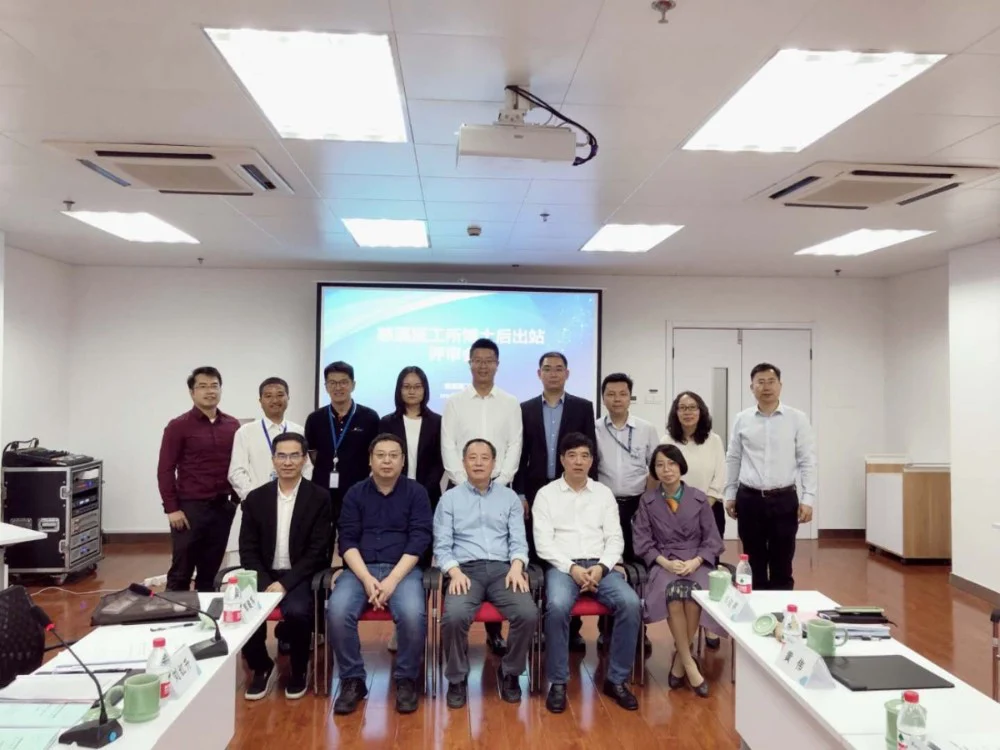
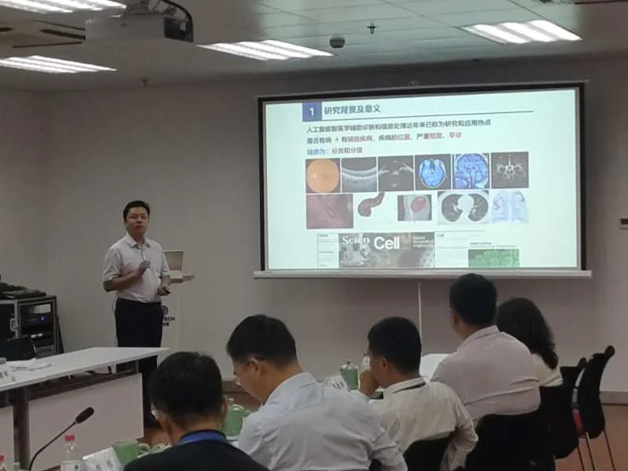
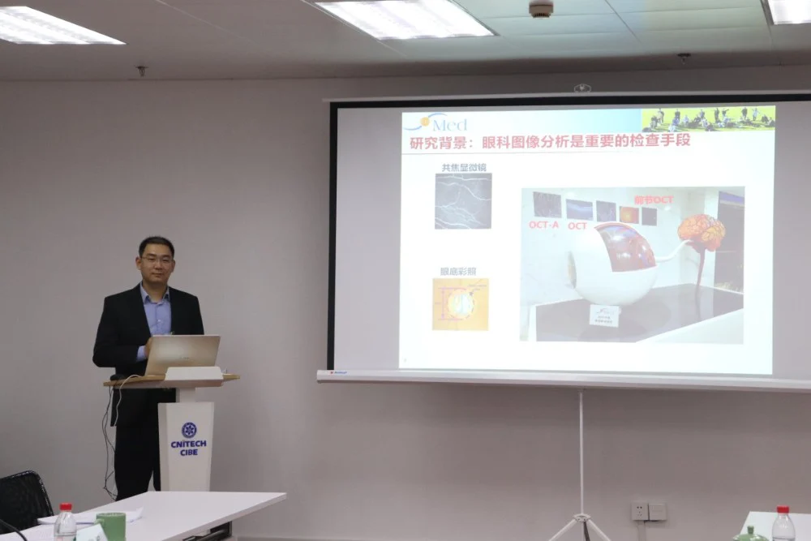

2020年10月12日上午，iMed(中国)团队迎来了两位博士后陈洪瀚、苏攀的出站评审会。宁波市人社局领导和慈溪市人社局领导应邀参会。评审专家组由刘江教授、赵一天副研究员等7名专家组成。慈溪市人社局相关科室负责人、宁波材料所/慈溪医工所博士后管理负责人和慈溪医工所部分在站博士后列席评审会。
正式答辩前慈溪医工所所长吴爱国研究员致辞。陈洪瀚博士做了题为《医学图像分析及应用技术研究》的出站报告，苏攀博士做了题为《基于机器学习的角膜神经弯曲度评估方法研究》的出站报告。他们分别从研究背景与意义、主要研究内容、在站期间的研究成果等多个方面向评审专家作了详细汇报，并就与会专家提出的问题进行了认真解答。

陈洪瀚和苏攀博士是iMed(中国)团队第一批博士后，同时也是慈溪医工所工作站和宁波材料所流动站联合招收的第一批位博士后，合作导师为刘江教授(流动站导师)和赵一天副研究员(工作站导师)。
在站期间，陈洪瀚博士针对医学图像中的分类与分级问题展开研究：
1)提出了一套基于机器视觉检测和对抗网络的方法，用于处理医学影像中属于处理与视觉增强；
2)提出一种弱监督多示例的方法，用于解决窥镜影像内容的分类与分级问题；
3)提出了线状组织结构的检测与形态弯曲评估方法，用于眼科影像血管与神经的形态分类评估。
在站期间，主持64批次中国博士后基金面上项目一等资助1项、作为课题负责人负责宁波市科技创新2025重大专项1项，同时参与并申报了国家重点研发计划、国家自然科学基金等多个项目。发表或录用论文2篇，其中SCI检索1篇，EI检索1篇，另有1篇SCI论文在审，申请发明专利3项。

苏攀博士在站期间围绕角膜神经弯曲度分析的3个重要问题(角膜神经分割、弯曲度特征提取和基于分类的弯曲度分级)展开研究：
1）提出基于深度学习的线状结构分割方法，可以应用在IVCM图像上对角膜神经进行精准分割；
2）提出基于有序加权平均的医学图像语义特征提取方法，配合常用的分类器模型，提取的特征同传统方法相比弯曲度分级精度提高了约15%；
3）运用模糊集合理论和模糊逻辑，构建了基于语义变量和模糊模式树的评估系统，提升了角膜神经弯曲度自动分析系统的可解释性。
在站期间，获批国家自然科学基金青年项目、中国博士后科学基金面上项目二等资助等。发表或录用论文12篇，其中第一/通讯作者论文7篇，申请发明专利1项。

评审专家组经过评议，认为陈洪瀚、苏攀两位博士工作努力，治学严谨，研究成果有创新，圆满完成了各项科研任务，一致同意出站。